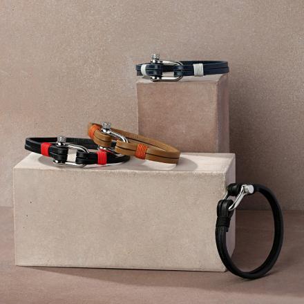
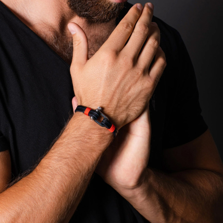

<section class="info-2__section">
    <div class="container">
        <div class="info-2__section-wrapper">
            <h2 class="info-2__section-title">
                Kisah tentang ELEGATTO
            </h2>
            
            <p class="info-2__text">
                Vlad Verchenko, seorang desainer dari kota pesisir Los Angeles, terinspirasi oleh seorang kenalan mendalam dengan kekuatan laut yang perkasa, nenek moyang pelaut kita, dan menciptakan Elegatto-merek perhiasan untuk para pemimpi, petualang, dan semua orang yang merasa terhubung dengan dunia, laut. Ia mewujudkan emosi tersebut dalam koleksi perhiasan unik yang menyampaikan esensi lautan dan semangat petualangan yang dipadukan dengan sentuhan keanggunan klasik.
            </p>
            
            <p class="info-2__text">
                Kami telah mengembangkan bentuk-bentuk yang hidup melampaui waktu, organik dan elegan, alami, dengan tekstur yang kaya, corak dan ekspresi yang memukau, memperhatikan detail dan kedalaman, harga, dan keindahan dunia sekitarnya.
            </p>
        </div>
    </div>
</section>